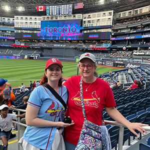
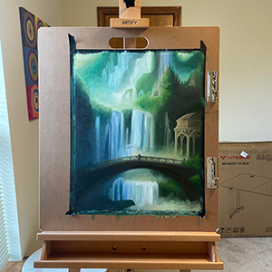
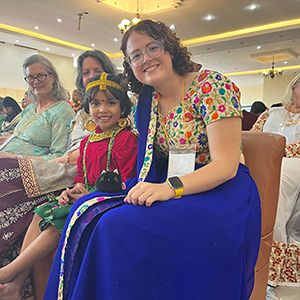
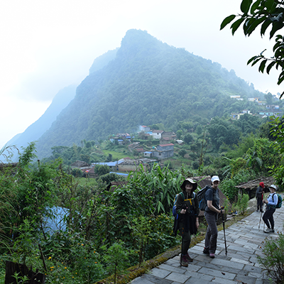
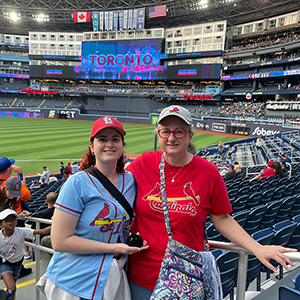
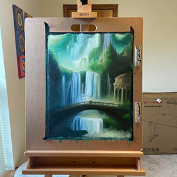
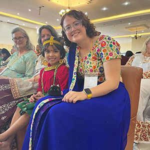
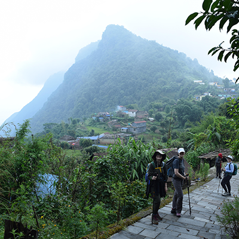

ABOUT ME
It's a miracle my cats or I haven't gotten oil paint all over my apartment carpets (or did I just jinx it…). I've always loved art and fell in love with oil painting in college, but it quickly fell to the wayside. But I've finally gotten back to painting in my free time. Luckily, my other hobbies like reading, enjoying Formula One, and traveling are much less messy. I'm currently making my way down the list of visiting every MLB stadium and just made my first international trips to Nepal and Canada!
 







MY PERSONALITY AS DEFINED BY CORPORATE ASTROLOGY
PREDICTIVE INDEX
SPECIALIST
Specialists are naturals at highly-skilled work. They're known to be skeptical, factual, and analytical. They thrive in and help contribute to a culture that values efficiency and detailed work.
WORKING GENIUS
WONDER
The natural gift of pondering the possibility of greater potential and opportunity in a given situation.
TENACITY
The natural gift of pushing projects or tasks to completion to achieve results.
ENNEAGRAM
ONE
Ones are responsible and serious-minded pragmatists. They want to find purpose in their lives, in particular the ability to improve the welfare of people and make things better for the greater good. Ones are willing to go the extra mile to ensure their work is top-notch and take great pride in crafting streamlined schedules and plans to carry out tasks in the most efficient manner possible.
STRENGTHSFINDER
-
RESTORATIVE
I am adept at dealing with problems. I am good at figuring out what is wrong and resolving it. -
DELIBERATIVE
I am best described by the serious care I take in making decisions or choices. I anticipate obstacles. -
LEARNER
I have a great desire to learn and want to continuously improve. The process of learning, rather than the outcome, excites me. -
CONSISTENCY
I am keenly aware of the need to treat people the same. I crave stable routines and clear rules and procedures that everyone can follow. -
ANALYTICAL
I search for reasons and causes. I have the ability to think about all of the factors that might affect a situation.
EXPERIENCE
LEARNING EXPERIENCE DESIGNER
Veterans United Home Loans
Sept 2020 - Present
- Work individually and collaboratively to design, develop, and deploy eLearning programs to train new and existing employees
- Lead Compliance course process revision by researching new software, writing process documents, managing team members and timelines, and working closely with Subject Matter Experts to decrease compliance failure rate by 87.5%
- Give big-picture and detailed feedback to team members to improve the quality and consistency of our projects, including directly managing a graphic design intern
- Instruct trainers throughout the company on how to build and optimize eLearning programs by meeting one-on-one, creating process documents and templates, and building courses on basic adult online learning best practices
- Co-presented on the Fundamentals of Assessments at the 2024 Annual Trainers United Conference for all company and sister-company trainers
YOUNG PROFESSIONALS BOARD MEMBER
Mitrata Nepal Foundation for Children
Feb 2021 - Feb 2022
- Collaborated with fellow volunteers and created graphic design assets to support the strategic objectives of the organization by building awareness, engaging the community, and planning public fundraising events
GRAPHIC DESIGNER
MOJO AD
Jan 2020 - May 2020
- Worked with fellow strategic communication students to develop a professional, fully-integrated marketing, advertising, and public relations campaign targeted at the young adult demographic for the Association of Fish & Wildlife Agencies
TEACHING ASSISTANT
University of Missouri School of Journalism
Aug 2019 - May 2020
- Facilitated student brand redesign and campaign team projects by providing feedback and coaching
- Taught new Strategic Communication students basic Adobe Photoshop, Adobe Illustrator, and Adobe InDesign skills
HUMANITIES TUTOR
University of Missouri Learning Center
Aug 2018 - Dec 2019
- Instructed students in individual and group settings on various humanities such as logic, history, and writing
EDUCATION
BACHELOR OF JOURNALISM
Emphasis: Strategic Communication
University of Missouri | Columbia, Mo | May 2020
CERTIFICATIONS
FRONT END WEB DEVELOPMENT
Treehouse | Feb 2025
INTRODUCTION TO FRONT-END WEB DEVELOPMENT
Meta | June 2024
FOUNDATIONS OF USER EXPERIENCE (UX) DESIGN
Google | April 2024
LEARNING DESIGN THINKING
LinkedIn | March 2022
INSTRUCTIONAL DESIGN ESSENTIALS: MODELS OF ID
LinkedIn | Feb 2022
INSTRUCTIONAL DESIGN: NEEDS ANALYSIS
LinkedIn | Feb 2022
AFTER EFFECTS 2020 ESSENTIALS
LinkedIn | July 2020
MIMIC PRO DIGITAL MARKETING
Stukent | May 2020
SKILLS
Project Management, Analytical Thinking, Organization, Planning & Prioritization, Quick Learner, Creative Thinking, Technical Writing, AGILE, Copy Editing, Graphic Design, Animation, Storyboarding, Video Editing, Audio Editing, HTML, CSS, JavaScript
SOFTWARE
Adobe After Effects, Adobe Audition, Adobe Illustrator, Adobe InDesign, Adobe Photoshop, Adobe Premiere Pro, Articulate Rise, Articulate Storyline, Blender, Camtasia, Genial.ly, Git, Visual Studio Code, Vyond